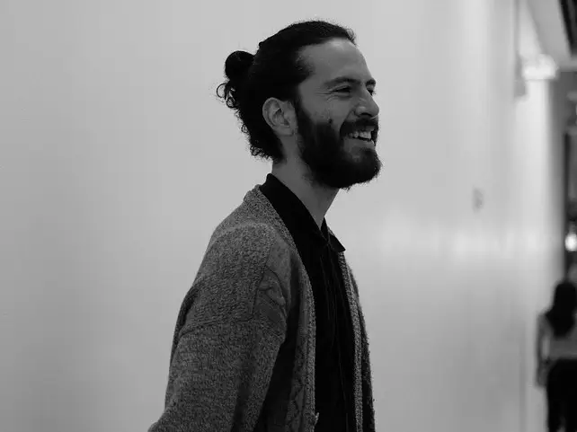
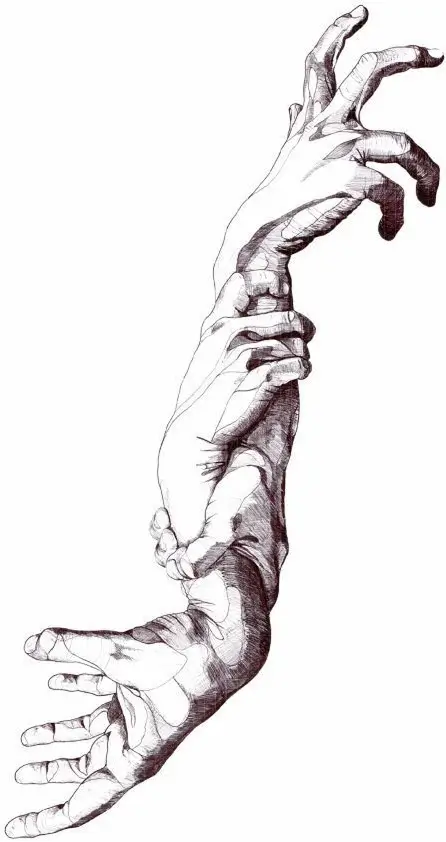

Soy Javier Revelo, artista visual y escultor. Mi trabajo explora los límites entre lo físico y lo simbólico. Nací en Colombia y actualmente desarrollo mi práctica artística entre América Latina y Europa. Mi universo creativo se construye a partir de la transformación de la forma, la materia y la espiritualidad. A través de la escultura, la ilustración digital y los medios mixtos, creo figuras que evocan estados de introspección, ritual y conexión interior.
Mi obra combina influencias de la escultura clásica, el surrealismo y el arte contemporáneo digital. Trabajo la anatomía humana como un lenguaje expresivo, donde el cuerpo se convierte en un territorio emocional y espiritual. Los personajes que desarrollo suelen encontrarse en posturas de tensión, meditación o metamorfosis, reflejando una búsqueda constante de equilibrio entre lo visible y lo invisible.
La técnica es un elemento central en mi proceso creativo. Ya sea modelando materiales físicos como la arcilla o la resina, o construyendo imágenes en entornos digitales, presto especial atención al detalle, las texturas y la composición. Cada pieza es el resultado de un trabajo minucioso que busca capturar la fragilidad y la fuerza que coexisten en la condición humana.
Mis obras han sido exhibidas en galerías y espacios culturales de Colombia, Argentina, México y España, participando tanto en exposiciones individuales como colectivas que han contribuido a consolidar mi lenguaje visual.
2024 — Visiones contemporáneas · Centro Cultural Recoleta · Buenos Aires, Argentina
2024 — Nuevos lenguajes del cuerpo · Museo de Arte Moderno · Medellín, Colombia
2023 — Arte y trascendencia · Galería NODO · Ciudad de México, México
2023 — Forma y vacío · Centro de Arte Contemporáneo · Valencia, España
2022 — Identidades en transformación · Espacio Sur · Bogotá, Colombia
2021 — Escultura expandida · Matadero Madrid · Madrid, España
2024 — Cuerpos en silencio · Galería Liminal · Bogotá, Colombia
2023 — Estados de la forma · Espacio MUTA · Buenos Aires, Argentina
2022 — Materia y espíritu · Casa Prisma · Ciudad de México, México
2021 — Figuras del umbral · Sala Áurea · Madrid, España
